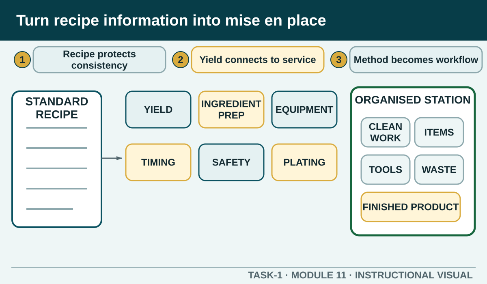

Read a standard recipe as a production document, select safe equipment and translate ingredients, yield, method and timing into an organised work plan.
Learning intention
What success looks like
Uses the nominated recipe rather than inventing one
Links method sequence to setup and timing
Includes equipment condition and food-safety controls
Shows a final check and a point for teacher confirmation
Core ideas
Build the complete picture
1
A standard recipe protects consistency
2
Yield connects quantity to service
3
Read the method as a workflow
4
Select and inspect equipment
Visual explanation
Turn recipe information into mise en place

A mock generic recipe document feeds six colour-coded outputs: Yield check, Ingredient preparation, Equipment, Timing dependencies, Safety controls and Presentation. These outputs arrange into a top-view station with clean work, ingredients, tools, waste and finished-product zones.
Worked example
Mise en place means planned readiness
Mise en place puts ingredients, equipment, waste controls and the work area into a ready state before production. Ingredients are checked, measured and prepared only as directed; equipment is clean and positioned; the sequence and timing are understood; and contamination controls are visible in the station layout.
Observed evidence: A learner setting up a fictional practical has placed every ingredient on the bench, but the method shows that a protected ingredient is not needed until a later stage and the crowded layout blocks the waste route. Decision and reason: They decide this is display, not useful mise en place, because early exposure and poor movement create avoidable risk. Safe action: The learner returns the later ingredient to authorised storage, stages equipment in method order and repositions the waste point after checking with the teacher. Result: The station has clear working space and ingredients appear only when required. Next check or record: The learner rehearses the sequence aloud, checks separation and records the layout change.
Question the room
Why should the full standard recipe be read before ingredients are collected?
It allows familiar-looking method steps to be skipped.
It reveals the yield, sequence, equipment, timing and safety needs that must shape the setup.
It guarantees the final product without monitoring the task.
Apply
Sandwich production and waste sequence
Brief: prepare four consistent ready-to-eat salad sandwiches using the teacher-authorised recipe. The exact ingredients, quantities and local presentation standard remain in that recipe.
Order all nine stages.
Check the sequence.
Name one waste-prevention decision and one food-safety control that must operate together.
Exit ticket
Action · evidence · next step
Using a teacher-nominated standard recipe, explain how you would turn the recipe into a mise-en-place plan. Include yield, method dependencies, equipment checks, station zones, food-safety controls and the final pre-start confirmation.
One action I would take
The evidence I would check
The person or source I would confirm with
My next improvement
1 of 8
Speaker notes and delivery prompts
Open with this purpose: Read a standard recipe as a production document, select safe equipment and translate ingredients, yield, method and timing into an organised work plan.
Use A standard recipe protects consistency to connect prior learning to the first observable workplace decision.
Model Mise en place means planned readiness by walking through this supplied example: Observed evidence: A learner setting up a fictional practical has placed every ingredient on the bench, but the method shows that a protected ingredient is not needed until a later stage and the crowded layout blocks the waste route. Decision and reason: They decide this is display, not useful mise en place, because early exposure and poor movement create avoidable risk. Safe action: The learner returns the later ingredient to authorised storage, stages equipment in method order and repositions the waste point after checking with the teacher. Result: The station has clear working space and ingredients appear only when required. Next check or record: The learner rehearses the sequence aloud, checks separation and records the layout change.
Ask: Why should the full standard recipe be read before ingredients are collected? Confirm the strongest response as It reveals the yield, sequence, equipment, timing and safety needs that must shape the setup..
Listen for this misconception: Skipping based on appearance can miss safety, yield, timing and presentation requirements.
Move into Sandwich production and waste sequence, then collect the saved response and finish with the source boundary: Authorised source note: Source basis: authorised Cycle 1 recipe, yield, equipment, knife and mise-en-place learning. The linked mise-en-place and knife-maintenance videos are conceptual support only; local recipes, equipment and demonstrations remain Teacher to confirm.